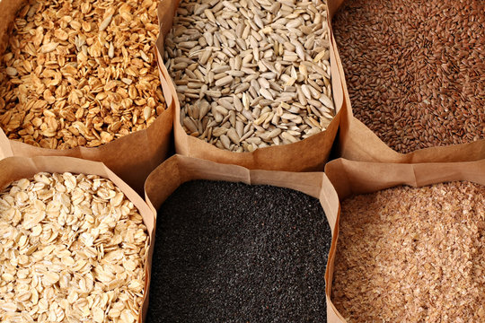
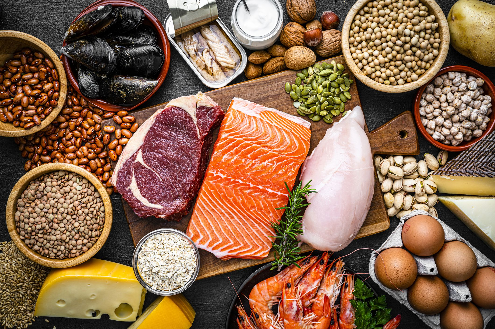

-
Why is the food you eat important to priorities for your health?
An intentional and well-rounded approach to nutrition is fundamental for those aiming to build muscle or improve their health. By prioritizing nutrient-dense foods, maintaining an appropriate caloric balance, and ensuring optimal hydration, you can enhance your physical performance, support muscle growth, and lay the foundation for a sustainable and healthy fitness journey. Below are some tips to help you.
-

Include a variety of fruits and vegetables in your diet
The inclusion of a diverse array of vegetables and fruits in your diet provides a broad spectrum of nutrients, promotes overall health, and reduces the risk of various chronic diseases. Aim to include fruits and vegetables of different colors and types to maximize the range of benefits they offer. Remember that each type of fruit and vegetable brings its unique set of nutrients, so a colorful and varied plate is key to optimal nutrition.
-

Choose whole grains over refined grains.
Choosing whole grains over refined grains is a health-conscious decision that provides a broader spectrum of nutrients and contributes to overall well-being. It is recommended to include a variety of whole grains such as brown rice, quinoa, oats, and whole wheat in your diet for optimal health benefits.
-

Include lean proteins in your meals.
It's important to choose lean protein sources to minimize saturated fat and calorie intake. Lean protein sources include poultry, fish, lean meats, tofu, legumes, low-fat dairy products, and plant-based protein sources. The specific protein needs can vary based on factors such as age, activity level, and individual health goals. Incorporating a variety of lean protein sources into your diet ensures a well-rounded intake of essential amino acids and other nutrients.